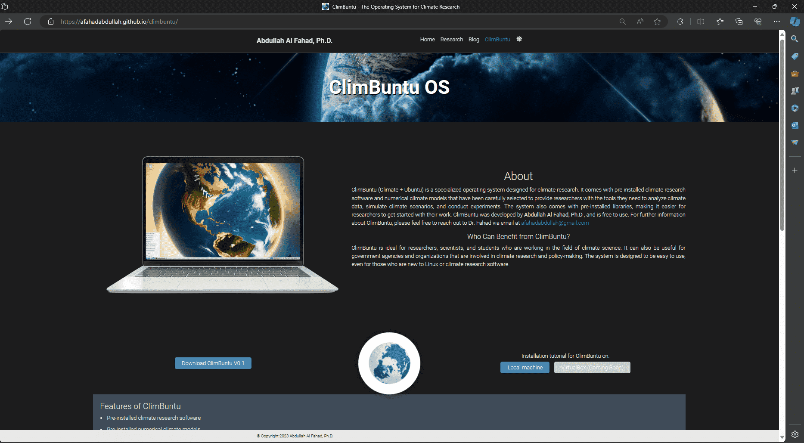
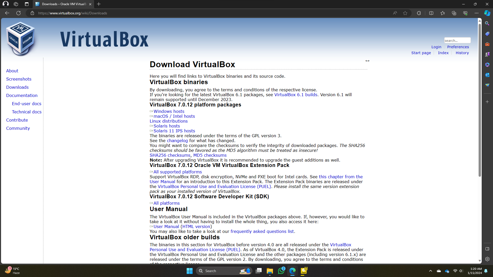
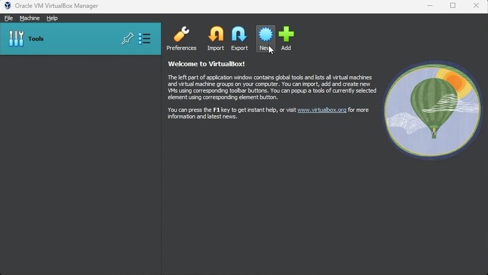
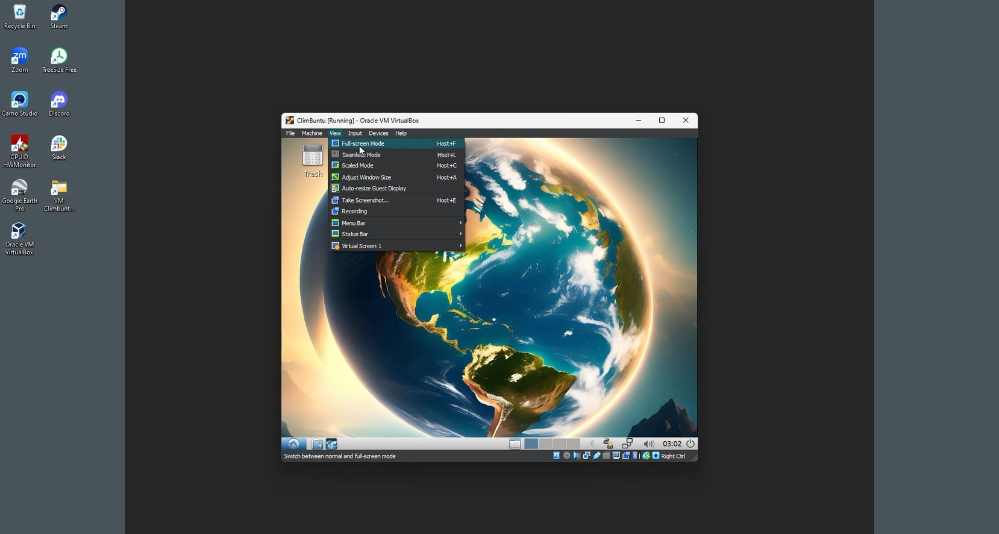

01. Go to ClimBuntu OS download page.
02. Click on the Download ClimBuntuV0.1 button.

03. You will be forwarded to a Google Form for registration.

04. Enter your credentials and submit.

05. Successful submission will provide a Google Drive link containing the ClimBuntu.iso file. Download the file on your device.

01. Begin by downloading VirtualBox from the official website.

02. Once the download is complete, open the Oracle VM VirtualBox executable file.
03. You'll be prompted with a dialogue box. Click "Yes" to proceed.
04. Follow the on-screen instructions by clicking "Next" to progress through the installation process.
05. During installation, you can choose the location where VirtualBox will be installed on your disk. Once you've specified the location, click "Next" to continue.
06. Confirm your selection by clicking "Yes."
07. Click "Install" to initiate the installation process.
08. Once the installation is complete, click "Finish." To open VirtualBox, ensure the checkbox indicating to launch the program immediately is ticked.
00. Upon opening Oracle VM VirtualBox, you'll be greeted with a familiar interface.
Additionally, after completing the installation, it's important to verify that CPU virtualization is enabled in your BIOS settings. The method for enabling this feature can vary depending on your device. If you need assistance, refer to this link for guidance.
01. Start by clicking on "New" to initiate the setup process.

02. A window will appear, mirroring the image provided.
03. Here, input the desired OS name, specify the installation location, and select the Climbuntu04.iso file previously downloaded. Then, proceed by clicking "Next."
04. Customize the allocated RAM and processors for Climbuntu, ensuring a minimum of 4GB RAM and 2 CPUs as recommended. Click "Next" to continue.
05. Determine the size of the virtual hard disk, typically recommended at 60GB. Click "Next" after configuring.
06. Review the summary of your setup details. Once confirmed, click "Finish" to proceed.
07. The system will power off. To adjust previous specifications like RAM, CPU units, or virtual hard disk size, click on "Settings."
08. Explore the settings to make any necessary modifications.
09. Maximize the video memory allocation and confirm changes by clicking "OK."
10. Now, click on "Start" to launch the setup process.
11. Shortly after, a window will appear. Use the keyboard arrow keys to navigate through options.
12. Navigate to 'Boot System Installer' and press Enter on your keyboard.
13. You'll encounter the installer window as depicted below.
14. Create a profile as prompted and click "Next" to proceed.
15. To initialize partition creation, select the allocated storage and click "Delete."
16. Choose the empty space and utilize the green arrow to create a partition.
17. Select the '/' option denoting the Root directory and finalize the mount point using the green arrow.
18. With the mount point established, click "Next" to advance.
19. Initiate the installation process by clicking on "Start."
20. Upon successful installation, click "OK" to acknowledge.
21. The system will prompt for a reboot. Choose to reboot manually or allow the system to automatically reboot in 30 seconds.
22. After rebooting, you'll be greeted with the following window, indicating that Climbuntu is ready for use.
01. To fully immerse yourself in Climbuntu, opt for 'Full Screen Mode' from the View menu located at the top.

02. Click on 'Switch' to activate the full-screen view.
03. Note that occasional glitches may occur during this process.
04. If necessary, revert from full-screen mode by clicking on 'Full Screen Mode' again.
05. Next, navigate to 'Upgrade the Additions…' under the device options as shown in the image below.
06. Allow some time for the upgrade process, which will insert a removable medium. Click 'OK' to access this medium via the file manager.
07. Open the terminal within this folder.
08. Execute the command sudo ./VBoxLinuxAdditions.run in the terminal.
09. Once the process completes, close the terminal window.

10. Reboot the session to apply the changes.
11. After rebooting, reselect 'Full Screen Mode' for optimal display.
12. Click 'Switch' to activate the full-screen mode once more.
13. Your display should now function smoothly.
14. To access the pre-installed Climate Tools, navigate to the file manager and open the terminal. Enter cd $MODEL followed by ls to view the available tools.
15. If bookmarks in the File Manager for Climate Tools fail to function, manually add them by navigating to /usr/bin/soft in the file manager.
Follow these steps to enhance your Climbuntu experience and access its full potential effortlessly.